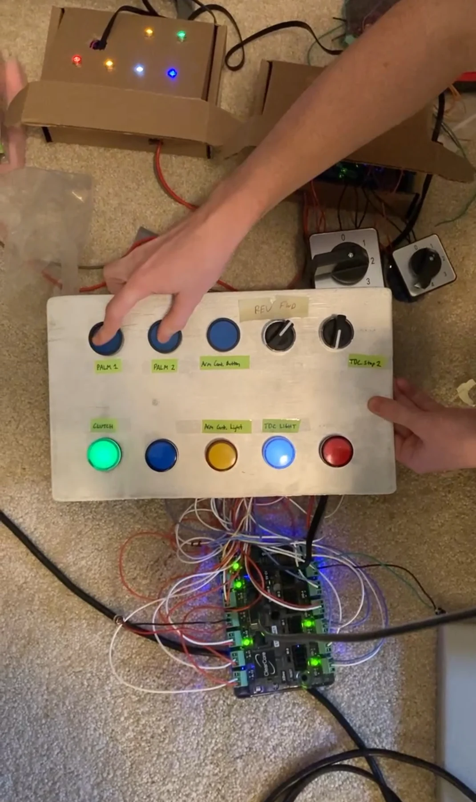

New Century Industries
Industrial punch-press controls
At New Century Industries, I developed controls for industrial mechanical punch-press systems.

Controls development
I programmed and integrated a Teknic motion controller for the punch presses, connecting the control-panel hardware with the system’s controls.


Skills: Controller programming, System integration, Industrial automation